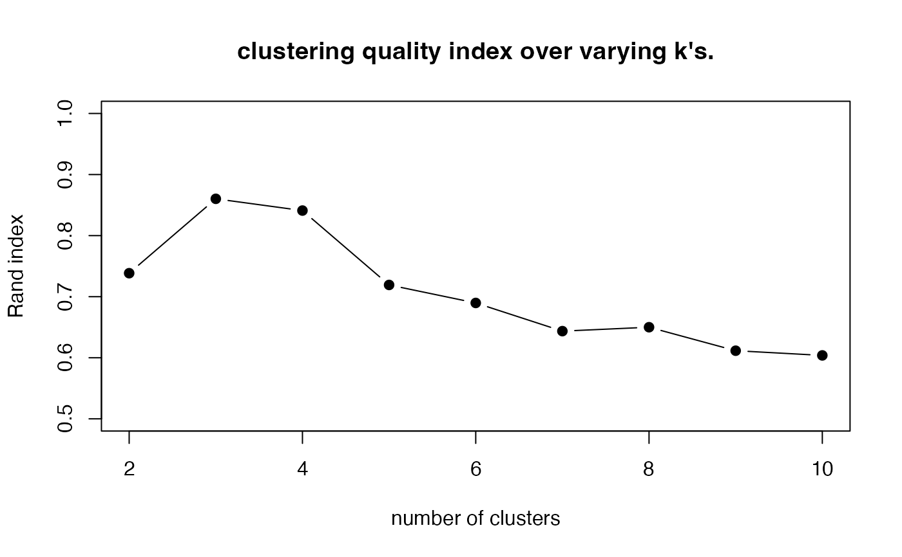

Spherical \(k\)-means algorithm performs clustering for the data residing on the unit hypersphere with the cosine similarity. If the data is not normalized, it performs the normalization and proceeds thereafter.
spkmeans(data, k = 2, ...)a real numeric \((n\times p)\) matrix of row-stacked observations, with \(n\geq 1\) and \(p\geq 2\). Every entry must be finite and every row must be nonzero. Each row is normalized to have unit Euclidean norm.
one integer from 1 to nrow(data) (default: 2).
named extra parameters, with no duplicates or unknown names:
initialization method; "kmeans" or "gmm"
(default: "kmeans"). Matching is case-insensitive and accepts
unambiguous abbreviations.
a positive integer giving the maximum number of outer iterations (default: 10). A value of 1 is honored.
a finite positive tolerance for change in the outer objective
(default: sqrt(.Machine$double.eps), approximately \(1.49\times10^{-8}\)).
one logical value; TRUE prints iteration information
and FALSE suppresses iteration output (default: FALSE).
Warnings about nonconvergence are still emitted.
a named list of S3 class T4cluster containing
a length-\(n\) integer vector of final class labels, from \(1:k\).
the sum of assigned inner products, \(\sum_i x_i^\top \mu_{z_i}\), using normalized data and the returned labels and centers. Higher values are better; the associated cosine loss is \(n-\mathrm{cost}\).
an \((k\times p)\) matrix of unit-norm centers.
name of the algorithm.
whether the algorithm satisfied its convergence checks.
the number of completed outer iterations.
the reason for termination.
whether the final partition agrees with the partition used for the last center update.
the initial cost, the cost after each completed
outer update, and the final freshly assigned cost. The last value equals
cost; the final entry may duplicate its predecessor.
the validated control values used for the run.
Assignments maximize the inner product with a unit center. An empty cluster during initialization, reassignment, or final assignment raises an error; clusters are not silently deleted or revived. If a chordal cluster has an exactly zero resultant, its first observation provides a valid minimizing unit center. Exact assignment ties select the first center.
Returned labels are freshly assigned to the returned centers. When
converged is FALSE, the centers need not be the centroids of
this final partition. Use the diagnostic fields when assessing termination.
I. S. Dhillon and D. S. Modha (2001). "Concept decompositions for large sparse text data using clustering." Machine Learning, 42:143–175.
# \donttest{
# -------------------------------------------------------------
# clustering with 'household' dataset
# -------------------------------------------------------------
## PREPARE
data(household, package="T4cluster")
X = household$data
lab = as.integer(household$gender)
## EXECUTE SPKMEANS WITH VARYING K's
vec.rand = rep(0, 9)
for (i in 1:9){
clust_i = spkmeans(X, k=(i+1))$cluster
vec.rand[i] = compare.rand(clust_i, lab)
}
## VISUALIZE THE RAND INDEX
opar <- par(no.readonly=TRUE)
plot(2:10, vec.rand, type="b", pch=19, ylim=c(0.5, 1),
ylab="Rand index",xlab="number of clusters",
main="clustering quality index over varying k's.")

par(opar)
# }